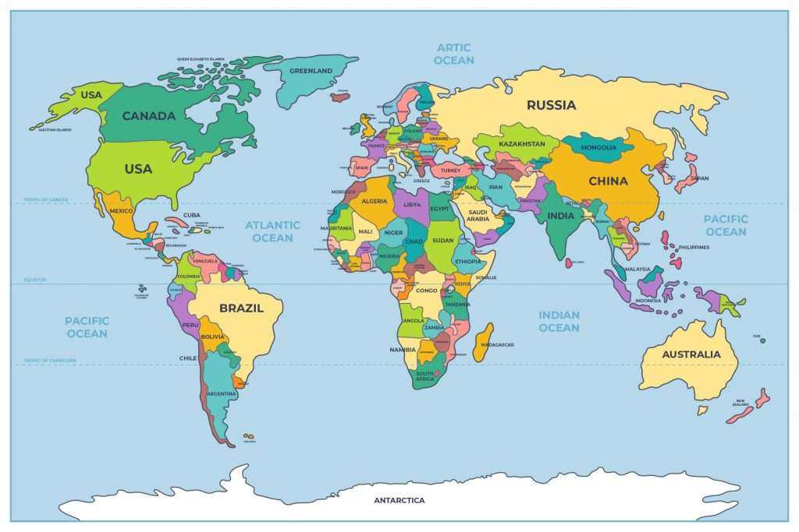

¿Quieres unirte a la fiesta?
Regístrate y te avisaremos de los mejores eventos del Día de San Patricio cerca de ti. ¡El verde te espera!
Recibirás novedades muy pronto.
Preguntas Frecuentes
El Día de San Patricio se celebra especialmente en Irlanda, Estados Unidos, Reino Unido y Australia.
Aquí puedes ver un mapa con las ciudades donde esta festividad tiene mayor presencia.
El "Azul San Patricio": En las primeras representaciones artísticas del santo y en la Orden de San Patricio (una orden de caballería británica creada en el siglo XVIII), el color oficial utilizado era un tono específico conocido como "azul San Patricio".
El color verde no se asoció fuertemente con la festividad y el país hasta la Rebelión Irlandesa de 1798. Durante este levantamiento contra la corona británica, los soldados irlandeses vistieron uniformes verdes y utilizaron el trébol como símbolo de nacionalismo y rebeldía.
Hecha por Miguel Garcia Marcos